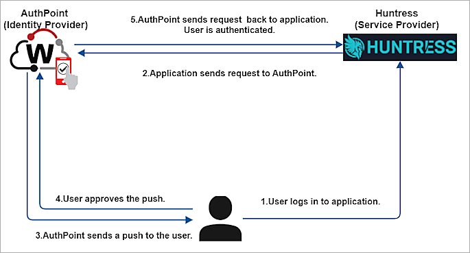
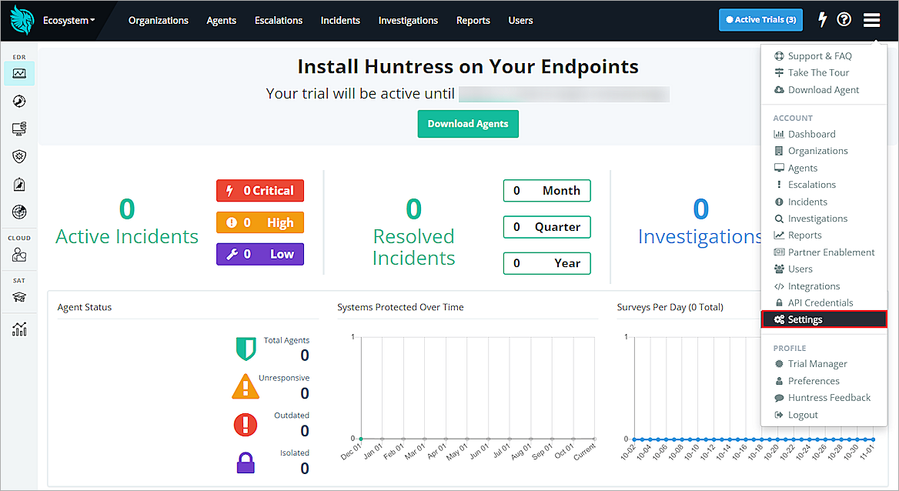
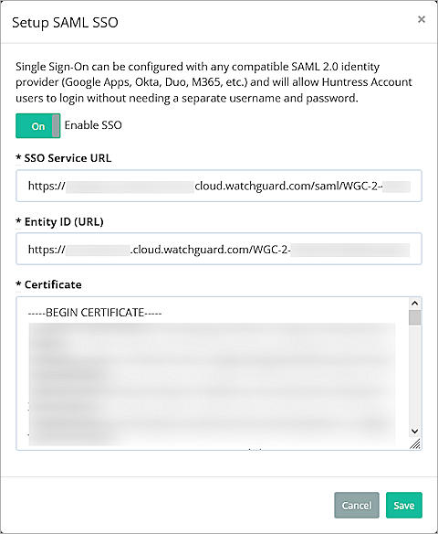
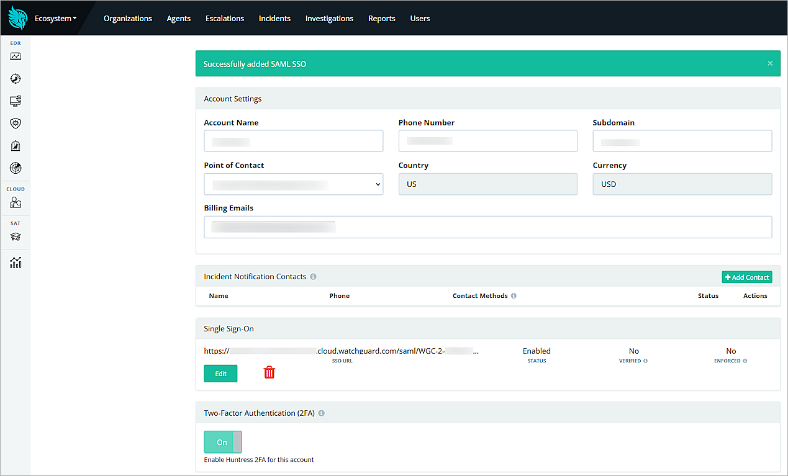
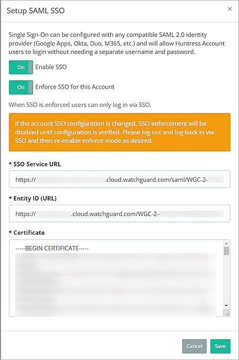
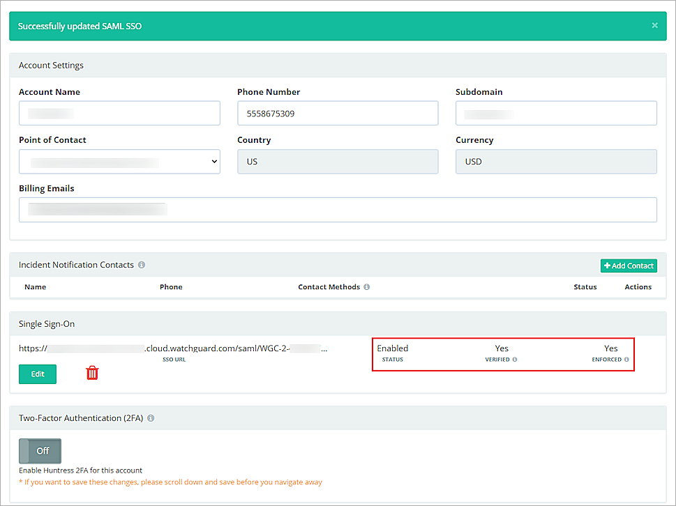
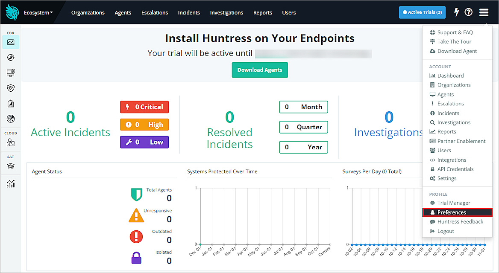
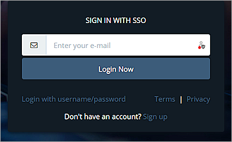

Deployment Overview
This document describes how to set up multi-factor authentication (MFA) for Huntress with AuthPoint as an identity provider. Huntress must already be configured and deployed before you set up MFA with AuthPoint.
Contents
Huntress Authentication Data Flow with AuthPoint
AuthPoint communicates with various cloud-based services and Service Providers with the SAML protocol. This diagram shows the data flow of an MFA transaction for Huntress:

Before You Begin
Before you begin these procedures, make sure that:
- An admin can log in to the Huntress Management Console.
- A token is assigned to a user in AuthPoint.
- A token is assigned to a user in Huntress.
- You have an AuthPoint identity provider (IdP) certificate (go to Certificate Management).
Additional charges might apply for the use of Huntress.
Download the AuthPoint Metadata and Certificate
Before you can configure MFA for Huntress, you must download the metadata file . To download the metadata file:
- Log in to WatchGuard Cloud.
- From the navigation menu, select Configure > AuthPoint. If you have a Service Provider account, you must select an account from Account Manager.
- Select Resources.

- Click Certificate.

- Next to the AuthPoint certificate that you want to associate with your resource, click
 , and select Download Metadata and Download Certificate.
, and select Download Metadata and Download Certificate.
We recommend that you select the certificate with the latest expiration date. If you do not have a certificate, or if all of your certificates have expired, click Add Certificate and use the new certificate.The AuthPoint metadata file provides your resource, in this case Huntress, with the information necessary to identify AuthPoint as a trusted identity provider.
Configure AuthPoint
Before AuthPoint can receive authentication requests from Huntress, you must complete these steps:
- Add a SAML Resource in AuthPoint.
- Add a Group in AuthPoint.
- Add an to AuthPoint.
- Add Users to AuthPoint.
Add a SAML Resource in AuthPoint
From the AuthPoint management UI:
- From the navigation menu, select Resources.
Click Add Resource.
The Add Resource page opens.
- From the Type drop-down list, select SAML.
Additional fields appear.

- On the SAML page, in the Name text box, type a name for this resource.
- From the Application Type drop-down list, select Huntress.
- In the Service Provider Entity ID text box, type https://huntress.io/sso/metadata.
- In the Assertion Consumer Service text box, type https://huntress.io/sso/auth.
- From the AuthPoint Certificate drop-down list, select the AuthPoint certificate to associate with your resource. This must be the same certificate that you downloaded the metadata for in the previous section.
- Leave the other settings as defaults.
Add a Group in AuthPoint
To configure MFA, you must have at least one user group in AuthPoint. If you already have a group, you do not have to add another group.
To add a WatchGuard Cloud-hosted group to the WatchGuard Cloud Directory:
- Go to Configure > Directories and Domain Services.
- Click the WatchGuard Cloud Directory domain name. If you have not yet added the WatchGuard Cloud Directory, click Add Authentication Domain and select the WatchGuard Cloud Directory.
The New Group page appears.

- In the Groups tab, click Add Group.
- In the Group Name text box, type a descriptive name for the group.
- (Optional) In the Description text box, type a description of the group.

- Click Save.
Your group is added to the WatchGuard Cloud Directory and to AuthPoint.
Add an Authentication Policy to AuthPoint
Authentication policies specify which resources users can authenticate to and which authentication methods they can use (Push, QR code, and OTP).
You must have at least one authentication policy in AuthPoint that includes the Huntress resource. If you already have authentication policies, you do not have to create a new authentication policy. You can add this resource to your existing authentication policies.
Users that do not have an authentication policy for a specific resource cannot authenticate to log in to that resource.
To configure an authentication policy:
- From the navigation menu, select Authentication Policies.
- Click Add Policy.

- Type a name for this policy.
- From the Select the Authentication Options drop-down list, select Authentication Options and select which authentication options users can choose from when they authenticate.
For SAML resources, if you select more than one authentication option, users must select one of the available options when they authenticate. For example, if you select OTP and Push, users can choose to type their OTP or approve a push to authenticate. You cannot require that they do both.

- Select which groups this policy applies to. You can select more than one group. To configure this policy to apply to all groups, select All Groups.
- Select the resource that you created in the previous section. If you want this policy to apply to additional resources, select each resource this policy applies to. To configure this policy to apply to all resources, select All Resources.

-
(Optional) If you have configured policy objects such as a Network Location, select which policy objects apply to this policy. When you add a policy object to a policy, the policy only applies to user authentications that are the same as the conditions of the policy objects. For example, if you add a Network Location to a policy, the policy only applies to user authentications that come from that Network Location. Users who only have a policy that includes a Network Location do not get access to the resource when they authenticate outside of that Network Location (because they do not have a policy that applies, not because authentication is denied).
If you configure policy objects, we recommend that you create a second policy for the same groups and resources without the policy objects. The policy with the policy objects should have a higher priority.

- Click Save.
Your policy is created and added to the end of the policy list.When you create a new policy, we recommend that you review the order of your policies. AuthPoint always adds new policies to the end of the policy list.

Add Users to AuthPoint
Before you assign users to a group, you must add the users to AuthPoint. There are two ways to add AuthPoint user accounts:
- Sync users from an external user database
- Add WatchGuard Cloud-hosted AuthPoint users
Each user must be a member of a group. You must add at least one group before you can add users to AuthPoint.
To import users from Active Directory, Microsoft Entra ID, or an LDAP database, you must add an external identity in the AuthPoint management UI. External identities connect to user databases to get user account information and validate passwords.
- To sync users from Active Directory or an LDAP database, you must add an LDAP external identity
- To sync users from Microsoft Entra ID, you must add a Microsoft Entra ID external identity
When you sync users from an external user database, you can sync any number of users and they are all added to AuthPoint at one time. Users synced from an external user database use the password defined for their user account as their AuthPoint password.
To learn how to sync users, go to Sync Users from Active Directory or LDAP and Sync Users from Azure Active Directory.
You create WatchGuard Cloud-hosted users and groups from the WatchGuard Cloud Directory in WatchGuard Cloud. Directories and Domain Services is where you add shared authentication domains for WatchGuard Cloud devices and services, such as AuthPoint.
Users that you add to the WatchGuard Cloud Directory are automatically added to AuthPoint as well.
You add local AuthPoint users form Directories and Domain Services. You manage the users in AuthPoint on the Users page.
When you add WatchGuard Cloud-hosted AuthPoint users, you choose whether the user is an MFA user or a non-MFA user.
- MFA users are user accounts that will use AuthPoint multi-factor authentication to authenticate. This is not related to the AuthPoint Multi-Factor Authentication license type.
- Non-MFA users are users that will only ever authenticate with a password, such as a service account user. Non-MFA users do not consume an AuthPoint user license and cannot authenticate to resources that require MFA. They can only authenticate to protected resources if the non-MFA user account has a password only authentication policy for that resource.
After you add a user, you can edit the user account if you need to change their account type. When you change a user account from MFA to non-MFA, AuthPoint deletes the tokens and password vault (if applicable) that belong to the user. This action cannot be undone.
Unlike users synced from an external user database, WatchGuard Cloud-hosted AuthPoint users define and manage their own AuthPoint password. When you add a WatchGuard Cloud-hosted user account, the user receives an email that prompts them to set their password.
To learn how to add WatchGuard Cloud-hosted AuthPoint user accounts to the WatchGuard Cloud Directory, go to Add Local Users to an Authentication Domain.
Configure Huntress
To configureHuntress for MFA, complete these steps:
- Enable SSO in Huntress.
- Verify SSO in Huntress.
- Enforce SSO in Huntress.
- Disable Two-Factor Authentication in Huntress.
Enable SSO in Huntress
- Log in to Huntress Management Console as an admin.
- Select > Account > Settings.

- Click Setup SAML SSO.
The Setup SAML SSO page opens.

- Turn on the Enable SSO toggle.
- Open the AuthPoint metadata file you downloaded, and find the values of the entityID and SingleSignOnService Location parameters.
- In the SSO Service URL text box, enter the value of the SingleSignOnService Location parameter from the AuthPoint metadata file.
- In the Entity ID (URL) text box. enter the value of the entityID parameter from the AuthPoint metadata file.
- Open the AuthPoint certificate you downloaded and copy the entire certificate.
- In the Certificate text box, paste the entire certificate including the BEGIN CERTIFICATE and END CERTIFICATE statements.
- Click Save.

Verify SSO in Huntress
You must successfully log in with SSO before you can enforce SSO and disable two-factor authentication in Huntress.
- Open a new web browser or new incognito window, and go to https://huntress.io/sso.
- Enter your email address and then click Login Now.
You will be redirected to AuthPoint for authentication. Complete your AuthPoint authentication, then return to Huntress for two-factor authentication. - Enter your Huntress authentication code and click Verify.
You are logged in to the Huntress Management Console.
To avoid performing two-factor authention twice (Huntress and AuthPoint) for login authentication, we recommend that you disable the Huntress MFA.
Enforce SSO in Huntress
- Log in to Huntress Management Console as an admin.
- Select > Account >Settings.
- Under Single Sign-On, click Edit.
The Setup SAML SSO page opens. - Enable Enforce SSO for this Account.

- Click Save.
Disable Two-Factor Authentication in Huntress
After you enforce SSO, you need to disable two-factor authentication. If you do not disable it, you must authenticate twice — first through AuthPoint authentication, and then through Huntress two-factor authentication.
To disable two-factor authentication in Huntress:
- Select > Account > Settings.
- From the Two-Factor Authentication (2FA) section, disable the Huntress 2FA for this account.

- Scroll to the bottom of the page and click Save.
When two-factor authentication is disabled, SSO is the default login method for all users. If you previously used two-factor authentication, you must disable it for each user.
To disable two-factor authentication for your individual users:
- Log in to Huntress Management Console by SSO.
- Select > Profile > Preferences.

- In the Two-Factor Authentication section, click Disable.
The Disable Two-Factor dialog box opens. - Click Disable.
Test the Integration
To test AuthPoint MFA with Huntress, you can authenticate with a mobile token on your mobile device. You can choose Push, QR code, or OTP for the authentication. In this example, we show the push authentication method (users receive a push notification in the mobile app that they must approve to authenticate).
- In a web browser, go to the Huntress Management Console.
- Click Login with SSO.
- Enter your email address, then click Login Now.

- Type your email address or AuthPoint user name, then click Next.
- In the Password text box, type your password, then click Finish.
- For the authentication method, select Send Push.
- Approve the authentication request that is sent to your mobile device.
You are logged in to the Huntress Management Console.